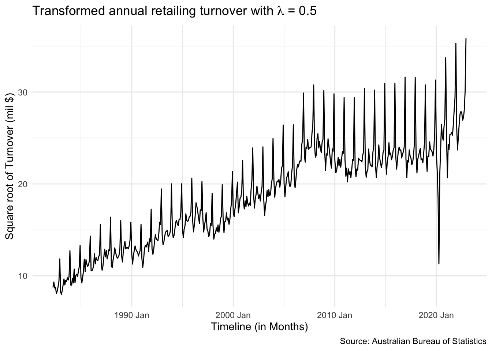
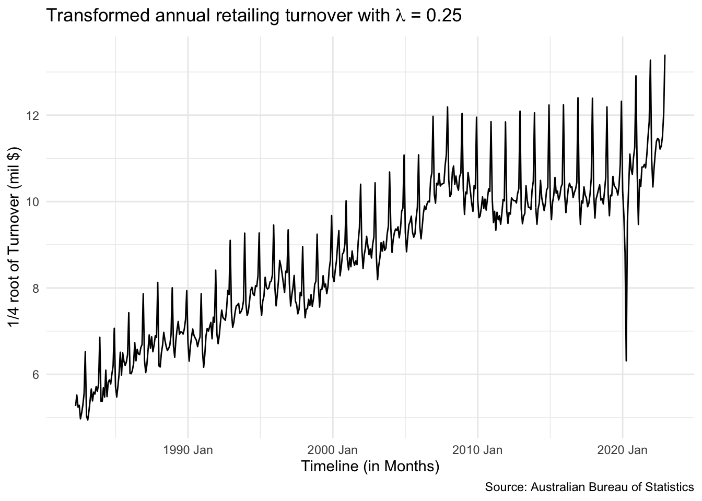
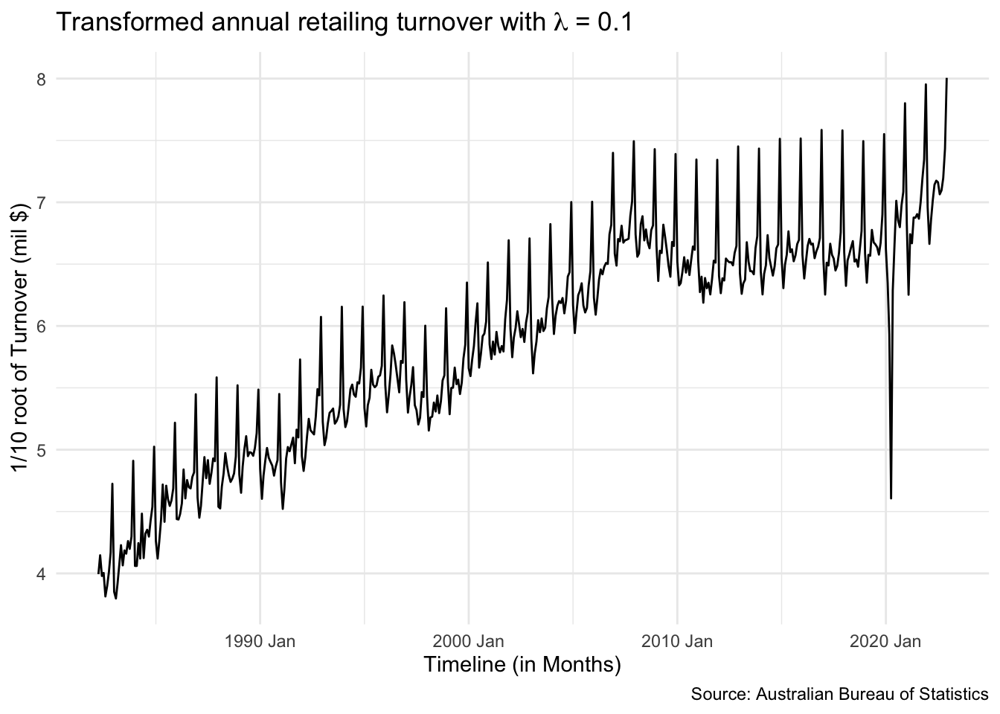
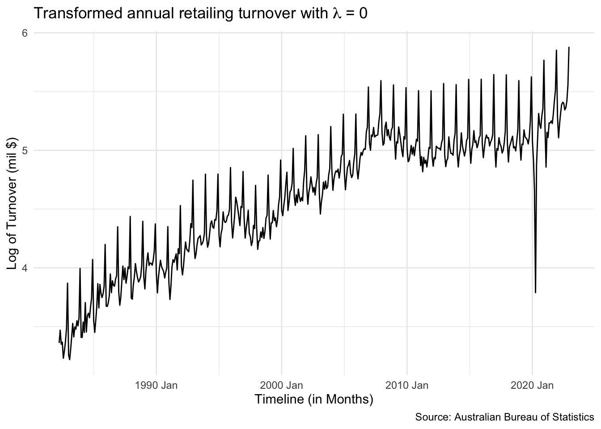
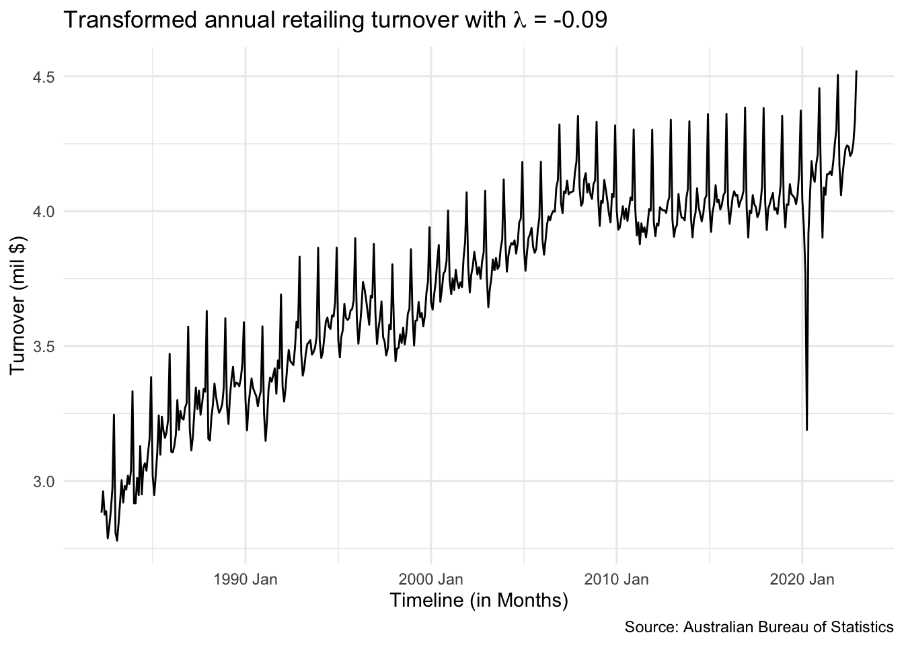

library(fpp3)
library(tidyverse)
library(kableExtra)
library(plotly)
library(latex2exp)ETC5550 Assignment 2
1 Libraries used
2 Glimpse of the data
Once we have obtained our data, let us take a quick glimpse of the data as illustrated by Table 1.
| State | Industry | Series ID | Month | Turnover |
|---|---|---|---|---|
| Western Australia | Clothing, footwear and personal accessory retailing | A3349825J | 1982 Apr | 28.8 |
| Western Australia | Clothing, footwear and personal accessory retailing | A3349825J | 1982 May | 32.1 |
| Western Australia | Clothing, footwear and personal accessory retailing | A3349825J | 1982 Jun | 28.5 |
| Western Australia | Clothing, footwear and personal accessory retailing | A3349825J | 1982 Jul | 29.0 |
| Western Australia | Clothing, footwear and personal accessory retailing | A3349825J | 1982 Aug | 25.3 |
| Western Australia | Clothing, footwear and personal accessory retailing | A3349825J | 1982 Sep | 26.9 |
3 Exercises
3.1 Plotting of timeseries
Let us observe the time series data for the turnover generated.

Key takeaway
Based on Figure 1 we can observe the following details in the timeseries plot:
There appears to be a seasonality in the plot with a spike being observed on every December of a year. The seasonality additionally appears to be consistent throughout the plot.
The amplitude of the spikes observed in the data appear to be increasing with time. This indicates that the variation in seasonality of the data is multiplicative in nature.
The plot also indicates the presence of an additive trend in the data with overall turnover increasing every year except for the year of 2020 in a linear fashion.
There appears to be an outlier in the data during the year of 2020 as indicated by the red cricle.While on each January of every year, we expect a rise in turnover, however, in the year of January 2020, the turnover was considerably lower than all the other years. This is expected to be caused due to shutting down of businesses and their activities in the initial part of the pandemic.
3.2 Plotting of timeseries data with gg_season
Key takeaway
Figure 2 illustrates the turnover generated by the Australian retailers for each year. Some key observations are as follows:
The turnover generated in Australia has been on a rise each year. This suggests that the expenditure of people on retailing services in Australia have been increasing each year and could be attributed to the growing population in the country.
We observe that the retailing turnovers in each year are generally higher in the months of November and December. This could be a result of the festive period when there are many customers purchasing gifts for families or going out to eat in various restaurants, etc.
Additionally, the month of November also includes the Black Friday sale which attracts multiple customers to purchase items due to specialised promotions. This may indicate the slight rise in turnover during the month of November each year.
The rise in the retail turnovers for the month of December are especially higher during the more recent years (2011-2021). This could again be an indicator for the growing population in the country during this period, which has gone on to to create a bigger market and drive sales, hence, contributing to the higher turnover.
There appears to be one single year when the retail turnover dropped steeply in the month of April but eventually picked up for the rest of the year. This could be an indicator of the effects of the COVID-19 lockdown when the business activities were very limited and prevented multiple retailers in various regions of Australia to be able to generate revenue.
3.3 Plotting of timeseries data with gg_subseries
Key takeaway
Figure 3 illustrates the variation of retailing turnover faceted by each month and plotted against years. Key observations are as follows:
As already observed in Section 3.2, the plot suggests that the retailing turnover has increased each year from 1990 to 2022.
The average retail turnover is observed to be higher for the month of December when compared to the rest of the year. As explained previously, the main driver for the boost of retailing turnover in this period is attributed to the festive season which includes Christmas, Boxing Day and the run up to the New Year Eve.
A drop in retail turnover for the months of March, April and May was observed in 2020. This can be attributed to the lockdowns set in place when the pandemic outbreak was first experienced.
3.4 Box-Cox transformation of the data
3.4.1 Estimating the value of \(\lambda\)
In order to apply the Box-Cox transformation, we are required to obtain the appropriate value of the parameter \(\lambda\) which will allow us to analyse the timeseries data with the seasonal variations being equal at all levels, thereby transforming the multiplicative variation in the data into an additive variation.

Figure 4 illustrates a square root transformation. As we can observe, the square root transformation appears to be weak in nature, and hence, not be able to effectively make the variations in seasonality equal.
Let us now attempt to transform the data using \(\lambda = 0.25\)

As observed in Figure 5, the transformation appears to be weak in the lower seasonality variation (towards the early years) as compared to the higher seasonality variation (towards the later years).
In order to increase the effect of the Box-Cox transformation, we will need to reduce the \(\lambda\) value further. Let us try using \(\lambda = 0.1\).

Based on Figure 6, it appears that a transformation with \(\lambda = 0.1\) has still missed out in the seasonality variation during the early years as there still appears to be some amount of minor differences between the initial seasonality variation and the later seasonality variation.
Due to the inherent low sensitivity of the \(\lambda\) parameter, we can consider that any value lower than 0.1 to have the same effect as when \(\lambda = 0\). This means that the Box-Cox transformation approaches towards a logarithmic transformation.
Let us attempt to visualise this by performing a log transformation through \(\lambda = 0\)

Note
Figure 7 illustrates the timeseries data for retailing turnover after being transformed through the Box-Cox transformation on the log scale. Here are some key observations:
We observe that unlike the original data, the variation in seasonality of the Log transformed data was much more similar through the timeseries.
Using the Log transformation, the datapoints with lower seasonality variation (data in the initial time period) was stretched to larger variations while the datapoints with higher seasonality variation (data in the later time period) was compressed to relatively smaller variations.
Since the variations are fairly similar throughout the entire period of the data, we can consider the transformed data to contain an additive variation of seasonality.
Usage of a log transformation also provides better interpretability as changes in a log value are proportional to changes on the original scale, mulitplied by a factor.
We can additionally use the Guerrero transformation as a means to automate the process of obtaining a \(\lambda\) value. Based on this optimisation technique, a value of \(\lambda = -0.09\) was obtained. The corresponding plot upon transformation can be observed in Figure 8.

3.5 STL decomposition of the timeseries data
Key takeaway
Based on the STL decomposition for the log based transformation done as illustrated by Figure 9, we observe the following:
The trend of the transformed data suggests a somewhat linear (and hence an additive) rise in the overall annual retailing turnover.
The seasonality of the data is observed to be fairly constant in each year, with a peak appearing during the end of the year as a result of the higher expenditures expected during the festive season.
The remainder plot illustrates an outlier in the data close to the year of 2020. This indicates the underwhelming retailing turnovers due to the outbreak of COVID-19 that resulted in the shutting down of many business activities for a period of few months.